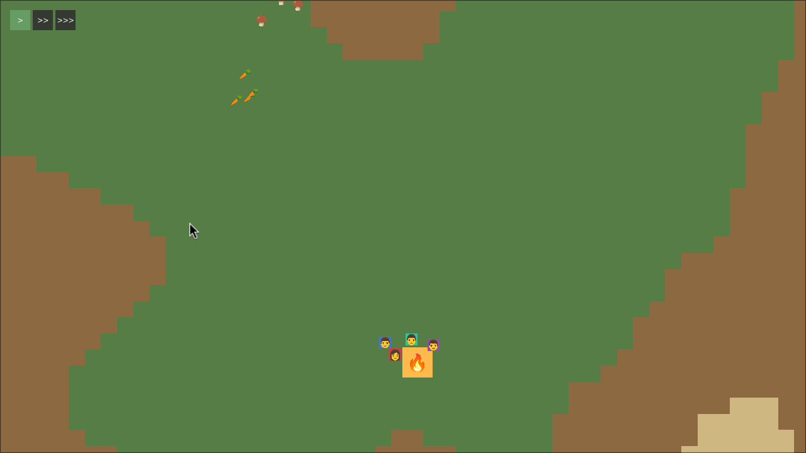
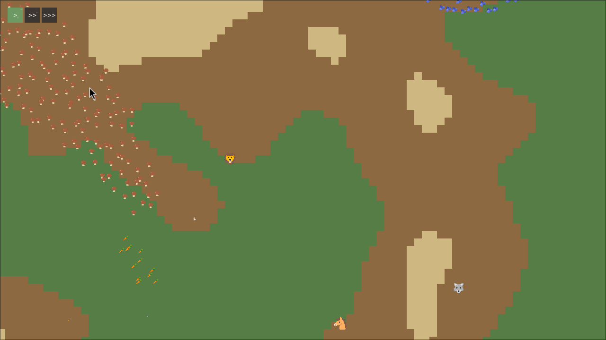
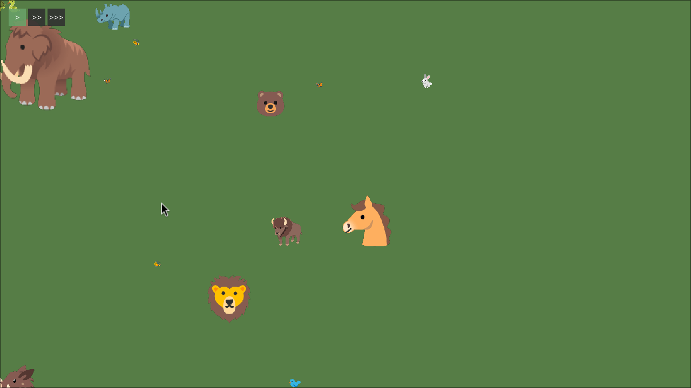

Hi! I'm starting a new project, called "Dunbar".
Dunbar is about a group of hominids living in the Late Pleistocene. It's a game about travelling the world as nomads, foraging, camping, hunting, and encountering and dealing with other hominid groups. I'm personally very interested in this era, where we (Homo Sapiens) shared the world with other hominids, such as Neanderthals, Denisovans, and some remaining Homo Erectus. It seems such a crazy idea to be wandering the world as a Homo Sapiens and finding some "guys", that look similar, yet at the same time so different than us.
This is a game idea I've had for some time. Recently, while reading a story about Neanderthals, I felt the urge to start working on it (even though I have other projects that I "should" be working on... anyway).
I've chosen "Dunbar" as a codename. This will probably not be its final name. I just needed something good enough to use as a git repository name, subdomain (devlog), and C# namespace.
Dunbar will be shamelessly inspired by Rimworld. I'm interested in the experience of "managing" a group of people, with different priorities, skills, working together to survive as long as possible. All that, but in a "pre-historic" setting. It makes me sad to think that most of the stories, legends, battles, etc that happened during that long period (much much longer than our recorded history), are forever lost. Ideally, this game should be able to satify some of that yearning.
AI Disclaimer: I am an experienced developer and I consider myself capable to program this game by myself. Anyhow, I'm still leveraging LLMs to help me develop faster. I'm not prompting "Claude, create a game". I'm also not reverse engineering anything. I'm just using models to be able to program faster. Also, I use local models for most of the programming work. I will not use AI for the game art (graphics, music, SFX), nor for writing these blog posts. I want that to look VERY HUMAN.
I'm starting with a proof of concept. It's a single procedurally generated map, where a randomly created group of hominids wanders around, picks up berries and mushrooms, builds a campfire, and sits around it, while watching the wildlife. It is working well. The graphics are basically a group of relevant emojis I took from the Noto Emoji font. This will surely change in the future, but like Rimworld, the focus will be on the experience and the imagination of the player, who'll be able to live and tell his own stories, rather than on elaborate graphics.
I want to document the process from day one. That's why I'm building this devlog. I think, because of LLMs, we are entering a new era where games will be massively produced. Also, people can now just copy games completely, which leads to debates about originality and ownership. Logging my progress here is a way to "prove" there's a human here after all, failing, achieving, and progressing. I hope other people might be interested in this process as well.
Technically, this is a C# project with Monogame. I'm not using any other dependencies for now, but I'm not religious about that. I will probably add some modding capabilites with Lua later. Artistically, I'll likely go with a pixel art style, as it's the only art I have some experience with. Musically, I enjoy synthesizers (I have some analog synths), and I'll probably use them to create sound effects and maybe the music as well. I know how to use Ableton Live and I've produced some electronic music and a doom metal album in the past, so I feel confident that I can do the whole soundtrack.
That's it. Thanks for your time!


